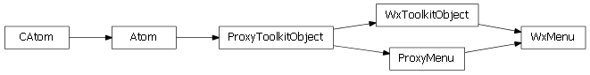

Bases: enaml.widgets.toolkit_object.ToolkitObject
A widget used as a menu in a MenuBar.
The title to use for the menu.
Whether or not the menu is enabled.
Whether or not the menu is visible.
Whether this menu should behave as a context menu for its parent.
A reference to the ProxyMenu object.
Bases: enaml.qt.qt_toolkit_object.QtToolkitObject, enaml.widgets.menu.ProxyMenu
A Qt implementation of an Enaml ProxyMenu.
A reference to the widget created by the proxy.

Bases: enaml.wx.wx_toolkit_object.WxToolkitObject, enaml.widgets.menu.ProxyMenu
A Wx implementation of an Enaml ProxyMenu.
A reference to the widget created by the proxy.
A reimplemented destructor.
This destructor simply drops the reference to the menu and the enaml declaration. Destroying it will cause wx to segfault.
Enter search terms or a module, class or function name.